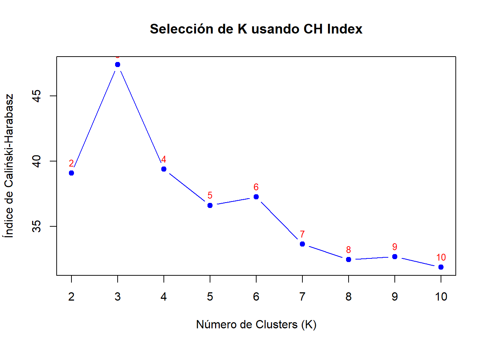
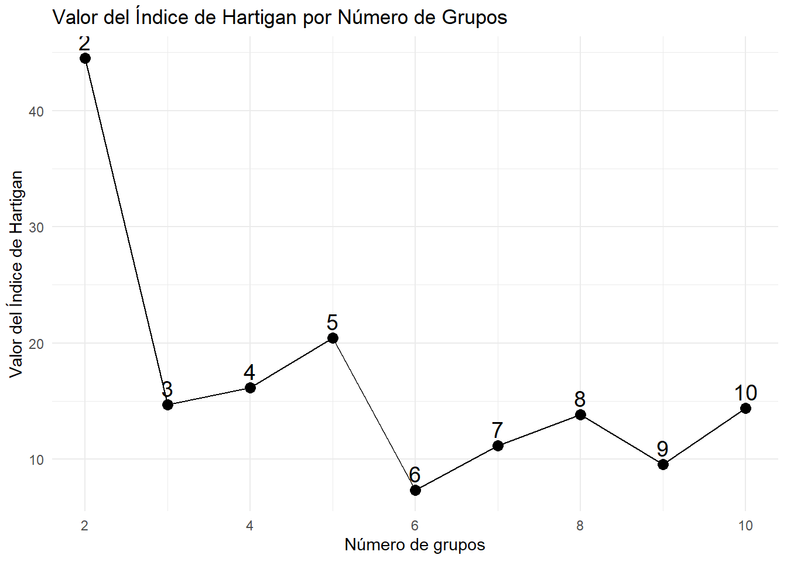
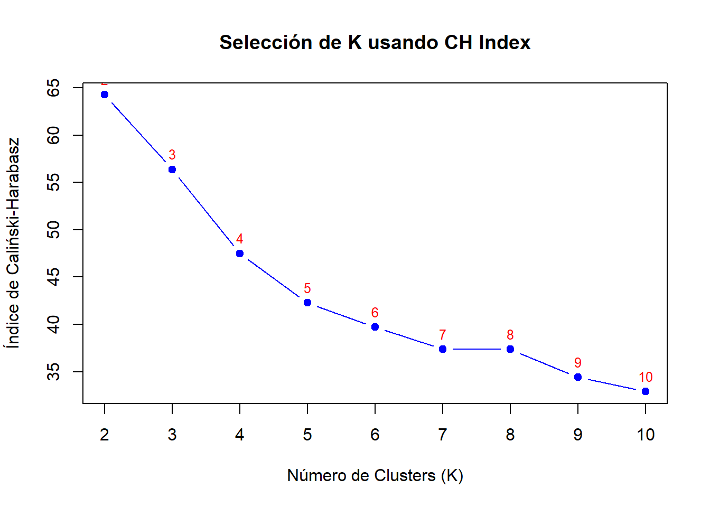
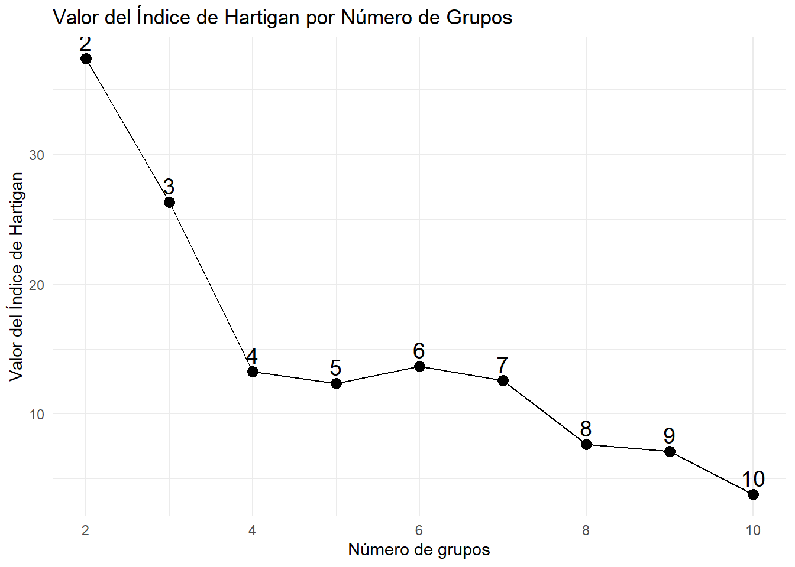
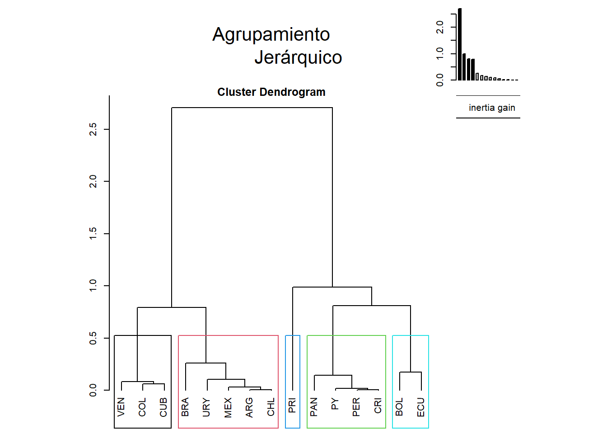
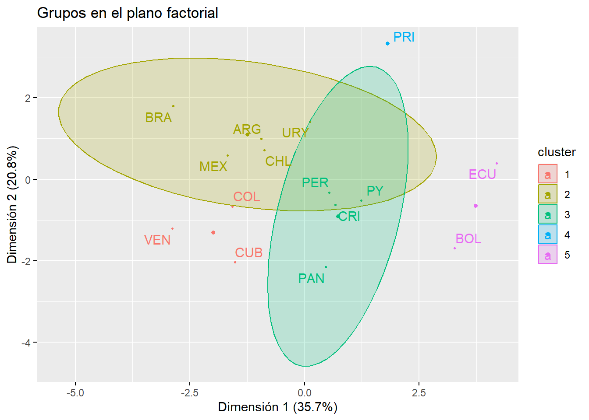
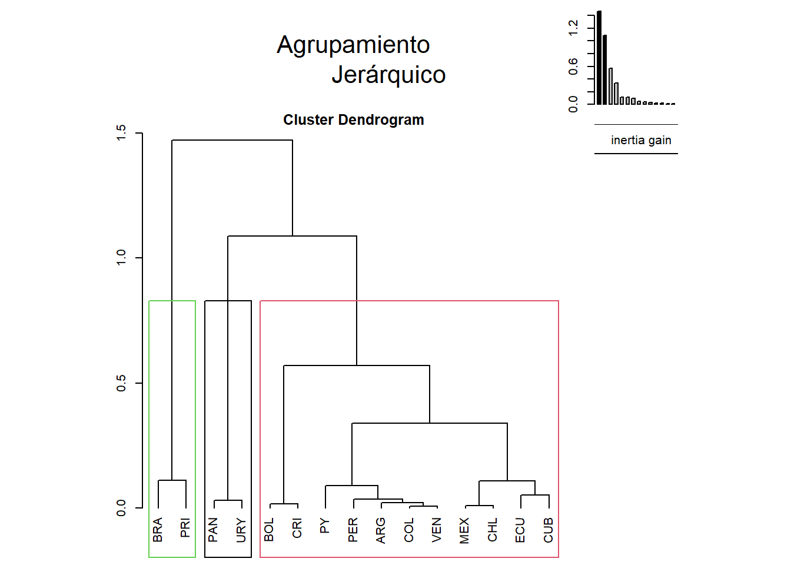
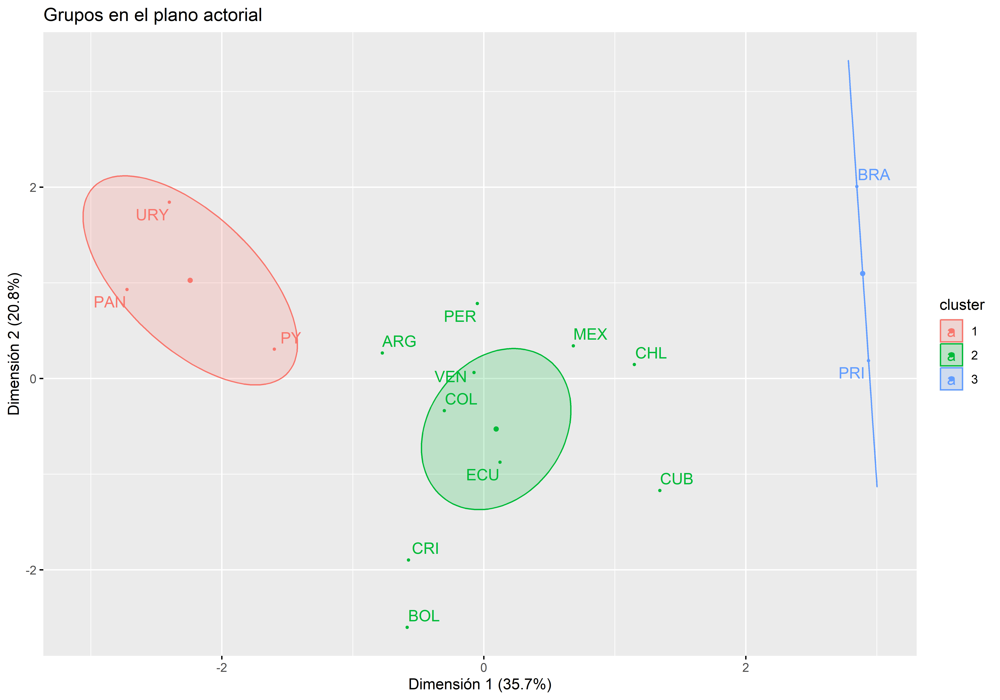

| Pais | UniPais | SC.Lac.Ranking | SC.Ibe.Ranking | SC.Co.Ranking | SC.Productividad | SC.Colaboracion.Interciol | SC.Impacto.normalizado | SC.Publicaciones.de.alta.calidad | SC.Indice.de.especializacion | SC.Indice.de.excelencia | SC.Liderazgo.cientifico | SC.Excelencia.con.liderazgo |
|---|---|---|---|---|---|---|---|---|---|---|---|---|
| BRA | DE SAO PAULO (USP) - BRA | 1 | 1 | 1 | 52908 | 26.36 | 0.86 | 38.33 | 0.38 | 8.76 | 60.26 | 4.01 |
| MEX | NAL AUTONO DE (UM) - MEX | 2 | 3 | 1 | 21423 | 39.98 | 0.81 | 43.82 | 0.30 | 8.10 | 59.53 | 3.29 |
| BRA | Es DE CAMPIS (UNICAMP) - BRA | 4 | 6 | 3 | 18649 | 22.56 | 0.85 | 37.67 | 0.51 | 8.78 | 59.77 | 4.35 |
| ARG | BUENOS AIRES - ARG | 7 | 15 | 1 | 12825 | 41.02 | 1.03 | 51.25 | 0.18 | 10.68 | 61.53 | 3.87 |
| BRA | DO RD Janeiro FED - BRA | 5 | 7 | 4 | 16590 | 28.54 | 0.90 | 39.45 | 0.47 | 8.94 | 56.40 | 3.31 |
| BRA | EEs PAULISTA JULIO MESQU - BRA | 3 | 5 | 2 | 19119 | 18.36 | 0.72 | 30.10 | 0.00 | 6.72 | 61.13 | 2.80 |
Taller Sexto
Punto 1
El indicador Scimago establece un ranking universitario basándose en la calidad de las publicaciones que estas realicen, el archivo que se utiliza para este ejercicio contiene datos de 149 Universidades Latinas y 11 indicadores de Scimago: SC.Lac.Ranking , SC.Ibe.Ranking SC.Co.Ranking, SC.Productividad, SC.Colaboracion.Interciol, SC.Impacto.normalizado, SC.Publicaciones.de.alta.calidad, SC.Indice.de.especializacion, SC.Indice.de.excelencia, SC.Liderazgo.cientifico, SC.Excelencia.con.liderazgo.
En la siguiente tabla se muestran algunas universidades con los valores de estos indicadores
Cálculo del indicador de Calinski-Harabasz para decidir el número de grupos:
Los valores del índice de Carlinski - Harabasz en la siguiente tabla y la gráfica indican que el número de grupos óptimo se obtiene donde el CHk toma su mayor valor en este caso es de 3.
[1] "Número óptimo de clusters según CH Index: 3"| Clusters | CH_Index | |
|---|---|---|
| 2 | 2 | 39.0501 |
| 3 | 3 | 47.3365 |
| 4 | 4 | 39.3473 |
| 5 | 5 | 36.5018 |
| 6 | 6 | 37.2637 |
| 7 | 7 | 33.6460 |
| 8 | 8 | 32.4201 |
| 9 | 9 | 32.6350 |
| 10 | 10 | 31.8198 |

En la siguiente tabla se muestran los 3 grupos que produce este agrupamiento, donde destaca el grupo 2 que solo cuenta con 17 universidades, una de las razones para que esto pase es porque aunque estan bien posicionadas no son las top, teniendo un menor producción científica que el grupo 3 (compuesta por las universidades top con alta producción cientiífica y colaboración internacional) pero significativa y mayor que el grupo 1, pues, en este ultimo grupo se encuentran universidades que tienen un menor impacto en la producción científica y menor énfasis en investigación
📌 Tabla: Universidades y sus Clusters📌 Tabla: Países y sus ClustersTipificación de los grupos sugeridos por el índice de CH por los promedios de las variables:
Los promedios de las variables para los 3 grupos sugeridos por el índice de Calinski-Harabasz con el algoritmo K medias se muestran en la siguiente tabla ordenadas por el SC.Lack.Ranking.
📌Tabla de promedios por cluster Se observa que el grupo 1 presenta los menores promedios en la mayoría de los indicadores, destacándose por su baja productividad y menor impacto de sus publicaciones. Además, el grupo 2 tiene los valores más altos en impacto normalizado y excelencia con liderazgol. Por otro lado, el grupo 3 es el más productivo con una diferencia bastante significativa y publicaciones en revistas de alto prestigio. Esto sugiere que el grupo 1 está más orientado a la enseñanza, mientras que el grupo 3 concentra las universidades más fuertes en investigación.
En cuanto a los grados de homogeneidad, el grupo 3 es el que mayor la tiene pues, tiene la mayor varianza en la mayoria de indicadores , en cuanto a los grupos 2 y 1 tienen una mayor dispersión entre sus valores, es decir el grupo 3 agrupa instituciones más similares entre ellas, mientras los otros dos grupos presentan más diferencias en sus indicadores
📌Tabla de varianzas por cluster Punto 2
Ahora se van a construir los grupos de universidades según el indicador SC utilizando el íındice de Hartigan.
En la siguiente tabla se muestran los valores del índice de Hartigan para diferentes números de grupos
El número óptimo de clusters según el criterio de Hartigan es: 4 Aquí podemos evidenciar que el número óptimo de grupos según el índice de Hartigan es 4, ya que del grupo 3 al 4 hay un salto muy grande (aprox 182) y a partir de ahí se puede decir que se estabiliza la variación de los grupos.

En la siguiente tabla se muestra la clasificación de las universidadespor cada grupo según el índice de Hartigan, resalta que en el grupo 1 solo está la Universidad de Sao Pablo (USP), ya que, en la mayoriía de indicadores del SC tiene los puntajes más altos y lejanos con respecto a los demás, en el grupo 2 esán las universidades top de latino américa con alto impacto en sus investigaciones, en cuanto a los grupos 3 y 4 tienen puntajes más diversos lo que sugiere un menor grado de productividad en investigación científica.
📌 Tabla: Universidades y sus Clusters📌 Tabla: Países y sus ClustersEn la siguiente tabla de medias se puede ver que el grupo 1 presenta los mejores valores, lo que indica que las universidades pertenecientes a este grupo (solo USP) presentan características muy destacadas en productividad, colaboración internacional, etc, por otro lado el grupo 2 y 4 tienen valores intermedios y el grupo 3 presenta los puntajes más bajos lo que se traduce en desempeños inferiores con respecto a las universidades de los otros grupos
| Cluster | SC.Lac.Ranking | SC.Ibe.Ranking | SC.Co.Ranking | SC.Productividad | SC.Colaboracion.Interciol | SC.Impacto.normalizado | SC.Publicaciones.de.alta.calidad | SC.Indice.de.especializacion | SC.Indice.de.excelencia | SC.Liderazgo.cientifico | SC.Excelencia.con.liderazgo |
|---|---|---|---|---|---|---|---|---|---|---|---|
| 1 | 1.00000 | 1.00000 | 1.000000 | 52908.000 | 26.36000 | 0.8600000 | 38.33000 | 0.3800000 | 8.760000 | 60.26000 | 4.010000 |
| 2 | 5.00000 | 9.00000 | 3.142857 | 16416.000 | 28.41286 | 0.8585714 | 39.12571 | 0.3214286 | 8.674286 | 60.12714 | 3.767143 |
| 3 | 156.53571 | 224.03571 | 19.562500 | 1040.098 | 42.43393 | 0.7800000 | 33.71045 | 0.3416964 | 8.153839 | 54.05625 | 2.470089 |
| 4 | 25.65168 | 48.27586 | 11.206897 | 5595.552 | 28.78621 | 0.7851724 | 35.23724 | 0.2606897 | 7.763448 | 58.13828 | 3.298965 |
En la homogeneidad se tiene que el grupo 3 es el más disperso por sus altos valores de varianza en los indicadores, aunque menor que el 3, el grupo 4 también presenta una alta dispersión entre los desempeños de las universidades que la conforman, en cuanto al grupo 2 sus varianzas son más bajas asi que presenta una mayor similitud en el rendimiento de sus universidades, y el grupo 1 no tiene varianza porque solo está una universidad.
| Cluster | SC.Lac.Ranking | SC.Ibe.Ranking | SC.Co.Ranking | SC.Productividad | SC.Colaboracion.Interciol | SC.Impacto.normalizado | SC.Publicaciones.de.alta.calidad | SC.Indice.de.especializacion | SC.Indice.de.excelencia | SC.Liderazgo.cientifico | SC.Excelencia.con.liderazgo |
|---|---|---|---|---|---|---|---|---|---|---|---|
| 1 | NA | NA | NA | NA | NA | NA | NA | NA | NA | NA | NA |
| 2 | 4.666667 | 25.66667 | 3.809524 | 12176940.3 | 77.26856 | 0.0091143 | 45.89350 | 0.0321143 | 1.423162 | 3.335824 | 0.4120905 |
| 3 | 11305.854569 | 14264.43115 | 349.275338 | 749215.1 | 347.59329 | 0.1267081 | 158.47197 | 0.0705890 | 24.016683 | 148.154627 | 2.4229901 |
| 4 | 413.172485 | 260.34975 | 63.098522 | 3183227.3 | 212.92054 | 0.0316187 | 72.67162 | 0.0255352 | 6.353195 | 16.859086 | 0.7415096 |
Punto 3
Observemos las tablas de cómo se dividen por paises los clusters para entender
La primera diferencia notabla es que en el indicador de Carlinski-Harabasz hay 3 clusters, mientras tanto en el indicador de Hartigan hay 4, también que la mayoría de universidades terminó en lugares diferentes a excepción de algunas que se mantienen, pero en general su cambio fue notable.
Ahora veamos los promedios.
Observamos que se ve mejor explicada en el indicador de Carlinski-Harabasz ya que tiene valores que tienen un sentido para lo que estamos haciendo ya que no hay valores tan desproporcionados excepto en productividad, mientras tanto en el indicador de Hartigan vemos que si tiene una desproporción en el ranking de la institución en América Latina, ranking de la institución en Iberoamérica, ranking de la institución en su país y en su productividad. En los otros brinda información más clara de qué grupos de universidades pueden ser mejor que otras.
En la varianza podemos ver algo muy parecido a lo que pasaba con el promedio con las proporciones manejadas en cada cluster.
Punto 4
Se realizara el agrupamiento para el ranking QS
Punto 4 - Carlinski-Harabasz
Determinar el número óptimo de clusters usando el índice de Caliński-Harabasz, el nos indica que dos clusters son los optimos.
[1] "Número óptimo de clusters según CH Index: 2"En la siguiente tabla vemos los valores de K y sus respectivos índices CH
Gráfico del índice de Caliński-Harabasz
Vemos que es suficiente ver que con dos grupos, recogen la información de los datos

Crear tablas de resumen
Media de los grupos.
Varianza de los grupos.
Punto 4 - Hartigan
Reutilizando la base anterior df seleccionamos solo PAIS, Unipais y columnas que inician con “QS”
Aplicar NbClust con el criterio de Hartigan
El número óptimo de clusters según el criterio de Hartigan es: 4 Crear una tabla con los valores del índice de Hartigan
Gráfico

#Mostrar tabla
kable(hartigan_values, caption = "Valores del índice de Hartigan por número de grupos")| Num_Grupos | Indice_Hartigan | |
|---|---|---|
| 2 | 2 | 37.4023 |
| 3 | 3 | 26.2965 |
| 4 | 4 | 13.2617 |
| 5 | 5 | 12.3565 |
| 6 | 6 | 13.6761 |
| 7 | 7 | 12.5658 |
| 8 | 8 | 7.6281 |
| 9 | 9 | 7.0877 |
| 10 | 10 | 3.7977 |
Mostrar tablas de promedios y varianzas
| Cluster | QS.Ranking | QS.Puntuacion | QS.Reputacion.academica | QS.Reputacion.entre.empleadores | QS.Estudiantes.por.profesor | QS.PromArticulos.por.docente | QS.Citas.por.articulo | QS.Docentes.con.doctorado | QS.Impacto.Web |
|---|---|---|---|---|---|---|---|---|---|
| 1 | 22.09677 | 82.05161 | 82.81935 | 73.38065 | 57.86774 | 83.48387 | 66.67742 | 89.28387 | 95.00968 |
| 2 | 48.88095 | 67.01190 | 80.17619 | 78.35383 | 49.34048 | 24.68095 | 58.25982 | 41.25974 | 81.93095 |
| 3 | 112.90476 | 45.88810 | 47.27857 | 55.11905 | 47.77857 | 14.90476 | 51.83562 | 30.63397 | 67.18095 |
| 4 | 110.17647 | 47.01765 | 28.12059 | 33.61496 | 57.98235 | 67.97941 | 46.65882 | 78.74118 | 84.04118 |
| Cluster | QS.Ranking | QS.Puntuacion | QS.Reputacion.academica | QS.Reputacion.entre.empleadores | QS.Estudiantes.por.profesor | QS.PromArticulos.por.docente | QS.Citas.por.articulo | QS.Docentes.con.doctorado | QS.Impacto.Web |
|---|---|---|---|---|---|---|---|---|---|
| 1 | 262.2237 | 111.06125 | 313.9563 | 569.5183 | 538.1289 | 353.6141 | 525.3551 | 226.0281 | 18.03957 |
| 2 | 363.0830 | 75.30985 | 139.3809 | 340.8784 | 738.8634 | 213.1728 | 862.1157 | 665.3678 | 209.38902 |
| 3 | 435.3566 | 23.36546 | 148.9027 | 529.1782 | 803.1505 | 195.8507 | 561.2383 | 377.6615 | 245.83280 |
| 4 | 722.2103 | 40.50816 | 198.1005 | 417.7336 | 741.2045 | 380.1544 | 514.1316 | 404.3140 | 165.18189 |
Punto 5
| Productividad | Colaboración interciol | Impacto normalizado | Publicaciones de alta calidad | Indice de especialización | Indice de excelencia | Liderazgo científico | Excelencia con liderazgo | |
|---|---|---|---|---|---|---|---|---|
| ARG | 0.0079 | -1.0040 | -0.2699 | 0.4778 | -0.1289 | -0.3558 | 1.0049 | 0.6382 |
| BOL | -0.7499 | 1.4495 | 1.0294 | 1.5840 | -0.0470 | 0.9800 | -2.2991 | -1.4099 |
| BRA | 2.6298 | -1.9006 | -0.5417 | -0.8133 | -0.7939 | -0.7266 | 0.8041 | 0.4675 |
| CHL | 0.1125 | -0.6238 | -0.1656 | 0.0156 | -0.5531 | -0.2062 | 0.6501 | 0.6953 |
| COL | -0.1603 | -0.6145 | -0.6134 | -1.3323 | -0.1354 | -0.5281 | 0.5059 | -0.5910 |
| CRI | -0.4179 | 0.5940 | 0.0200 | 0.3287 | -0.4839 | 0.2815 | -0.4685 | -0.2031 |
| CUB | -0.0990 | 0.3595 | -1.3138 | -0.2609 | -2.1589 | -1.1179 | -0.3633 | -1.0214 |
| ECU | -0.7826 | 1.1648 | 1.6903 | 1.5674 | 1.5552 | 2.3337 | -1.4467 | -0.0240 |
| MEX | 0.6077 | -1.0168 | -0.3267 | -0.5494 | -0.9694 | -0.3814 | 0.6641 | 0.3519 |
| PAN | -0.8439 | 1.3795 | -0.7009 | -0.7263 | 0.7177 | -0.8036 | -1.2187 | -0.7321 |
| PER | -0.6387 | 0.3068 | 0.3949 | -0.0537 | 1.3804 | -0.4122 | 0.2440 | -0.4246 |
| PRI | 1.8165 | 0.2610 | 1.5702 | 1.5363 | 0.9726 | 1.5542 | 0.7101 | 1.4996 |
| PY | -0.8169 | 0.6207 | 1.2457 | 0.0519 | -0.4839 | 0.5299 | -0.2988 | -0.3188 |
| URY | -0.3993 | 0.1087 | -0.3855 | -0.0970 | 1.0818 | 0.1237 | 0.4300 | 2.2249 |
| VEN | -0.2658 | -1.0847 | -1.6331 | -1.7288 | 0.0467 | -1.2712 | 1.0819 | -1.1525 |
Loading required package: FactoMineR| Valor propio | Porcentaje varianza | Porcentaje varianza acumulado | |
|---|---|---|---|
| comp 1 | 3.9952 | 49.9400 | 49.9400 |
| comp 2 | 2.1770 | 27.2120 | 77.1520 |
| comp 3 | 0.9016 | 11.2705 | 88.4225 |
| comp 4 | 0.3826 | 4.7822 | 93.2047 |
| comp 5 | 0.2715 | 3.3935 | 96.5982 |
| comp 6 | 0.1218 | 1.5225 | 98.1207 |
| comp 7 | 0.0995 | 1.2440 | 99.3646 |
| comp 8 | 0.0508 | 0.6354 | 100.0000 |
| Productividad | Colaboración interciol | Impacto normalizado | Publicaciones de alta calidad | Indice de especialización | Indice de excelencia | Liderazgo científico | Excelencia con liderazgo | clust | |
|---|---|---|---|---|---|---|---|---|---|
| ARG | 0.0079345 | -1.0040348 | -0.2698588 | 0.4777555 | -0.1288959 | -0.3557685 | 1.0048940 | 0.6382381 | 2 |
| BOL | -0.7498588 | 1.4495421 | 1.0294149 | 1.5839946 | -0.0469673 | 0.9799536 | -2.2991114 | -1.4098605 | 5 |
| BRA | 2.6298111 | -1.9006207 | -0.5416600 | -0.8132774 | -0.7938516 | -0.7265655 | 0.8040649 | 0.4675398 | 2 |
| CHL | 0.1124867 | -0.6238259 | -0.1656165 | 0.0156053 | -0.5531042 | -0.2061909 | 0.6501351 | 0.6953383 | 2 |
| COL | -0.1602674 | -0.6145065 | -0.6133992 | -1.3323338 | -0.1353982 | -0.5281093 | 0.5058521 | -0.5909950 | 1 |
| CRI | -0.4179142 | 0.5940322 | 0.0200370 | 0.3287285 | -0.4839200 | 0.2815368 | -0.4684842 | -0.2031113 | 3 |
| CUB | -0.0990428 | 0.3595082 | -1.3137839 | -0.2609082 | -2.1589055 | -1.1178835 | -0.3633499 | -1.0213865 | 1 |
| ECU | -0.7826365 | 1.1647806 | 1.6903171 | 1.5673538 | 1.5551927 | 2.3336750 | -1.4466632 | -0.0240275 | 5 |
| MEX | 0.6076929 | -1.0167810 | -0.3267221 | -0.5494005 | -0.9694231 | -0.3814048 | 0.6641025 | 0.3518516 | 2 |
| PAN | -0.8439288 | 1.3794545 | -0.7009473 | -0.7262941 | 0.7177000 | -0.8035959 | -1.2187186 | -0.7320973 | 3 |
| PER | -0.6386801 | 0.3067710 | 0.3949488 | -0.0536756 | 1.3804116 | -0.4122239 | 0.2440309 | -0.4246242 | 3 |
| PRI | 1.8164595 | 0.2609935 | 1.5701531 | 1.5362911 | 0.9725891 | 1.5542074 | 0.7101261 | 1.4995622 | 4 |
| PY | -0.8169298 | 0.6207439 | 1.2457102 | 0.0519376 | -0.4839200 | 0.5298628 | -0.2987938 | -0.3188270 | 3 |
| URY | -0.3992992 | 0.1086877 | -0.3855166 | -0.0969970 | 1.0818272 | 0.1237464 | 0.4299987 | 2.2248516 | 2 |
| VEN | -0.2658271 | -1.0847447 | -1.6330769 | -1.7287795 | 0.0466654 | -1.2712395 | 1.0819167 | -1.1524522 | 1 |

Too few points to calculate an ellipse
Too few points to calculate an ellipse
Too few points to calculate an ellipse
Al analizar la gráfica, podemos determinar que dentro de cada grupo se observa una dispersión notable. Esto refleja que, a pesar de las similitudes generales que justifican su agrupación (similitud en sus indicadores), existen diferencias internas significativas. Esta variabilidad sugiere que, aunque los países comparten patrones amplios, también presentan particularidades o matices que los distinguen dentro de su propio grupo.
Un ejemplo que podemos visualizar en el dendrograma es el del grupo 2. Países como Brasil y Chile forman parte de este grupo, pero presentan diferencias internas a pesar de estar agrupados por sus grandes similitudes. Esto confirma que, aunque dos objetos se encuentren en el mismo grupo, no son del todo iguales.
Punto 6
Construir una agrupación jerárquica por países utilizando la salida del PCA con los indicadores del Qs, tipificar los grupos como en el ejemplo 1.12.1.
| Reputación Académica | Reputación entre empleadores | Estudiantes por profesor | Artículos por docente | Citas por artículo | Docentes con doctorado | Impacto web | |
|---|---|---|---|---|---|---|---|
| ARG | 0.2982 | 0.7058 | 0.4022 | -0.1351 | -0.1118 | -0.1709 | -0.5062 |
| BOL | -1.6232 | 0.4796 | -2.0598 | -0.9016 | 1.1538 | -1.4227 | 0.2609 |
| BRA | -1.0562 | -1.0235 | 0.9133 | 2.2096 | -0.2644 | 1.8048 | 1.0117 |
| CHL | -0.0569 | 0.4263 | -0.6353 | 1.5684 | 0.0516 | 0.4177 | 0.1341 |
| COL | 0.6240 | 1.3211 | -0.4901 | 0.4043 | -0.6503 | -0.2495 | 0.2073 |
| CRI | 1.6976 | 1.2294 | 0.3566 | -0.6636 | 1.2257 | -1.1455 | 1.1662 |
| CUB | 1.9060 | -2.7202 | -0.9831 | -0.3549 | -0.1580 | -0.1421 | 1.1747 |
| ECU | -0.5521 | -0.5106 | -0.8541 | -0.5198 | 0.2233 | -0.2506 | 0.2866 |
| MEX | 0.0532 | -0.3155 | 0.3731 | 0.4282 | -0.0711 | 0.2949 | 0.5127 |
| PAN | -0.0065 | 0.3291 | 0.2722 | -1.1396 | -1.8877 | -1.0024 | -1.8015 |
| PER | 0.0036 | -0.2683 | 0.3347 | -0.1173 | -0.2793 | 0.5940 | -0.4940 |
| PRI | -0.5678 | -0.5233 | -0.2537 | 1.2005 | 1.5374 | 2.1544 | 0.9954 |
| PY | -1.5022 | 0.5942 | 1.5970 | -1.0948 | 1.4517 | -0.6465 | -0.9859 |
| URY | 0.2170 | -0.1628 | 1.7024 | -0.8297 | -1.1059 | -0.6304 | -2.0129 |
| VEN | 0.5654 | 0.4386 | -0.6755 | -0.0546 | -1.1151 | 0.3949 | 0.0511 |
| Valor propio | Porcentaje varianza | Porcentaje varianza acumulado | |
|---|---|---|---|
| comp 1 | 2.4968 | 35.6686 | 35.6686 |
| comp 2 | 1.4572 | 20.8177 | 56.4863 |
| comp 3 | 1.3601 | 19.4303 | 75.9166 |
| comp 4 | 0.7622 | 10.8882 | 86.8048 |
| comp 5 | 0.7196 | 10.2793 | 97.0841 |
| comp 6 | 0.1348 | 1.9262 | 99.0103 |
| comp 7 | 0.0693 | 0.9897 | 100.0000 |
| Reputación Académica | Reputación entre empleadores | Estudiantes por profesor | Artículos por docente | Citas por artículo | Docentes con doctorado | Impacto web | clust | |
|---|---|---|---|---|---|---|---|---|
| ARG | 0.2982436 | 0.7058230 | 0.4022485 | -0.1351026 | -0.1117874 | -0.1709049 | -0.5062491 | 2 |
| BOL | -1.6232086 | 0.4795709 | -2.0597753 | -0.9015856 | 1.1537632 | -1.4227414 | 0.2609307 | 2 |
| BRA | -1.0561920 | -1.0234639 | 0.9133057 | 2.2095602 | -0.2643608 | 1.8048023 | 1.0116593 | 3 |
| CHL | -0.0569169 | 0.4263211 | -0.6352788 | 1.5683632 | 0.0515868 | 0.4176773 | 0.1341112 | 2 |
| COL | 0.6239542 | 1.3211298 | -0.4901144 | 0.4043055 | -0.6502519 | -0.2494521 | 0.2072505 | 2 |
| CRI | 1.6975987 | 1.2293668 | 0.3565597 | -0.6635694 | 1.2256889 | -1.1455160 | 1.1661744 | 2 |
| CUB | 1.9059894 | -2.7201950 | -0.9830922 | -0.3548552 | -0.1580254 | -0.1421391 | 1.1747144 | 2 |
| ECU | -0.5521250 | -0.5106054 | -0.8540886 | -0.5198170 | 0.2232952 | -0.2506445 | 0.2865508 | 2 |
| MEX | 0.0532004 | -0.3154811 | 0.3730986 | 0.4282081 | -0.0710947 | 0.2949486 | 0.5126584 | 2 |
| PAN | -0.0064998 | 0.3291342 | 0.2722113 | -1.1396019 | -1.8876683 | -1.0024320 | -1.8014877 | 1 |
| PER | 0.0035836 | -0.2683147 | 0.3347284 | -0.1173103 | -0.2792717 | 0.5940284 | -0.4940084 | 2 |
| PRI | -0.5678104 | -0.5233408 | -0.2537261 | 1.2004985 | 1.5373672 | 2.1543600 | 0.9953737 | 3 |
| PY | -1.5022076 | 0.5941894 | 1.5969781 | -1.0948265 | 1.4517413 | -0.6465104 | -0.9859144 | 1 |
| URY | 0.2170161 | -0.1627701 | 1.7024137 | -0.8297094 | -1.1059040 | -0.6304134 | -2.0128535 | 1 |
| VEN | 0.5653743 | 0.4386357 | -0.6754684 | -0.0545575 | -1.1150782 | 0.3949371 | 0.0510898 | 2 |


Los resultados de la gráfica muestran que los países dentro de cada grupo tienden a agruparse en regiones cercanas del espacio factorial, lo que indica similitudes en varios indicadores del ranking QS. Sin embargo, a diferencia de otros análisis, los grupos no están estrictamente separados en cuadrantes distintos, lo que sugiere que no existen fronteras rígidas entre ellos y que algunos países pueden compartir características similares pese a pertenecer a distintos grupos.
Dentro de los grupos, se observa cierta dispersión, lo que indica que, aunque los países comparten similitudes generales, pueden presentar diferencias internas significativas en algunos indicadores clave. Estas diferencias pueden estar relacionadas con la reputación académica, la producción científica o la internacionalización, aspectos que influyen en la clasificación final de las universidades de cada país.
Además, la posición relativa de los países sugiere que los factores utilizados capturan principalmente diferencias en términos de impacto de la investigación y prestigio institucional. Aquellos países situados en posiciones extremas en los factores probablemente destacan o presentan rezagos en dimensiones específicas del ranking QS, como publicaciones altamente citadas o reputación académica.
En general, los resultados muestran que si bien existen patrones de agrupación, estos no son absolutamente rígidos, y la diferenciación entre países depende en gran medida de cómo se combinan los distintos indicadores del ranking.
Punto 7
Análisis del indicador SC para las universidades:
El análisis del indicador SC mediante los criterios de Calinski-Harabasz y Hartigan revela diferencias significativas en la clasificación de universidades según su producción científica. Mientras que el método de Calinski-Harabasz agrupa a las universidades en tres categorías según su impacto en la investigación, destacando un grupo intermedio con producción significativa pero sin alcanzar a las universidades top, el índice de Hartigan resalta la excepcionalidad de la Universidad de São Paulo (USP) al posicionarla en un grupo único debido a su destacado desempeño.
Ambos enfoques muestran una clara diferenciación entre las universidades con alta productividad científica y colaboración internacional, aquellas con producción intermedia, y las que tienen un menor énfasis en la investigación. Esto sugiere que los criterios utilizados afectan la segmentación y ofrecen perspectivas complementarias sobre la estructura del sistema universitario en términos de impacto científico.
Análisis del indicador Qs:
Utilizando el índice Carlinski-Harabasz vemos que son suficientes dos agrupaciones y para el índice de Hartigan son suficientes cuatro agrupaciones.
Agrupación jerárquica:
Para el análisis de indicador SC, en la gráfica evidencia que, si bien los grupos se forman en función de similitudes en sus indicadores, existe una dispersión notable dentro de cada uno. Esto indica que, aunque los países comparten patrones generales, presentan diferencias internas significativas que los distinguen dentro de su propio grupo.
Un claro ejemplo de esto se observa en el grupo 2 del dendrograma, donde países como Brasil y Chile comparten grandes similitudes pero también muestran particularidades que los diferencian. Esto confirma que pertenecer al mismo grupo no implica homogeneidad absoluta, sino más bien una proximidad relativa en ciertos aspectos clave.
Los resultados de la gráfica indican que los países dentro de cada grupo tienden a ubicarse en regiones cercanas dentro del espacio factorial, reflejando similitudes en varios indicadores del ranking QS. No obstante, la ausencia de una separación estricta entre cuadrantes sugiere que las fronteras entre los grupos no son rígidas. Esto implica que algunos países pueden compartir características similares a pesar de pertenecer a distintos grupos, evidenciando una continuidad en lugar de una segmentación tajante en su clasificación.